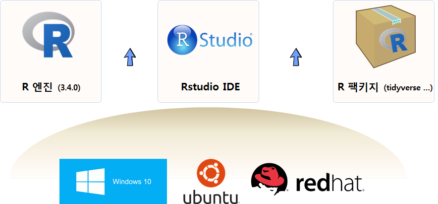
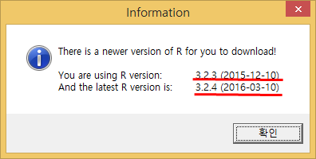
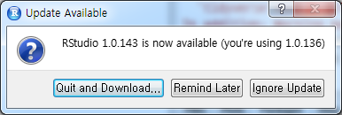

데이터 과학
R 업그레이드와 환경설정, 파일-객체 크기
학습 목표
- R 업그레이드할 때 필요한 사항을 숙지한다.
- R 코어엔진, RStudio 통합개발환경, 팩키지에 대해 이해한다.
- R 시작할 때 반복적으로 실행하는 작업을 자동화한다.
1. R, RStudio, 팩키지 업그레이드 1
적어도 1년에 한번 새로운 버젼 R 엔진이 출시되면 연례행사로 신경을 써야 되는 부분이 된다. R 엔진이 업그레이드 되면서 3.4.0 버젼의 경우 속도 향상 및 버그 수정을 주요 기능으로 내세우고 있다. 관련하여 R 엔진을 업그레이드 하면서 연관된 작업도 살펴보고 한번에 일괄작업하는 방법을 살펴본다. R엔진이 업그레이드 되면 영향을 받는 것은 RStudio IDE(통합개발환경)과 팩키지가 바로 영향을 받게된다.
R 엔진이 올라가는 운영체제에 따라 R 엔진을 설치하는 방법도 숙지해야 한다. 왜냐하면, R을 더이상 설문조사나 전통적인 통계분야 외에 기계학습, 인공지능, 이미지 처리, 공간정보 등 다양한 영역에서 활용하는데 더이상 윈도우 운영체제로는 비용을 떠나 답이 없다. 그래서 리눅스 환경에서 사용해야 하는데 리눅스도 상업적 목적에 특화된 레드햇계열과 전통적으로 R과 친숙한 우분투 계열 모두 설치하고 업그레이드를 할 수 있어야만 된다.

2. R 엔진 업그레이드 2 3
R 버젼이 3.2.3(2015-12-10) 에서 3.2.4(2016-03-10)로 4개월만에 업그레이드가 되었고, 얼마 지나지 않아 3.4.0(코드명 “You Stupid Darkness”) 버젼이 17년 4월 출시되었고, 속도가 비약적으로 향상되었다.
2.1. R 버젼확인
sessionInfo() 명령어를 통해서 현재 버전을 확인한다. 만약 설치할 버젼과 같다면 굳이 R 버젼을 바꿀 이유는 없다.
sessionInfo()R version 3.2.3 (2015-12-10)
Platform: x86_64-w64-mingw32/x64 (64-bit)
Running under: Windows >= 8 x64 (build 9200)
locale:
[1] LC_COLLATE=Korean_Korea.949 LC_CTYPE=Korean_Korea.949
[3] LC_MONETARY=Korean_Korea.949 LC_NUMERIC=C
[5] LC_TIME=Korean_Korea.949
attached base packages:
[1] stats graphics grDevices utils datasets
[6] methods base
loaded via a namespace (and not attached):
[1] tools_3.2.32.2. R 엔진 업그레이드 (우분투 리눅스)
몇가지 방법을 사용해서 최신 R 버전으로 업그레이드가 가능하다. R 저장소를 /etc/apt/sources.list 파일에 추가해서 최신 R을 설치하는 것도 한 방법이다. 우분투 trusty R 최신버젼 설치에 대한 자세한 원문은 CRAN 웹사이트를 참조한다.
/etc/apt/sources.list파일 하단에deb http://cran.rstudio.com/bin/linux/ubuntu precise/내용을 추가한다.- CRAN 미러에서 버클리 대학이 과거 많이 참조되었으나
rstudio로 선정했는데, 다른 곳을 지정해도 된다.
- CRAN 미러에서 버클리 대학이 과거 많이 참조되었으나
ubuntu@ip-172-31-22-122:~$ sudo nano /etc/apt/sources.list- 최신정보로 갱신하고 바이러리 R을 설치한다. 만약 소스코드에 R 팩키지를 컴파일한다면
r-base-dev도 함께 설치한다.
ubuntu@ip-172-31-22-122:~$ sudo apt-get update && sudo apt-get install r-base
ubuntu@ip-172-31-22-122:~$ sudo apt-get install r-base-devubuntu@ip-172-31-22-122:~$ R
R version 3.4.1 (2017-06-30) -- "Single Candle"
Copyright (C) 2017 The R Foundation for Statistical Computing
Platform: x86_64-pc-linux-gnu (64-bit)
R is free software and comes with ABSOLUTELY NO WARRANTY.
You are welcome to redistribute it under certain conditions.
Type 'license()' or 'licence()' for distribution details.
Natural language support but running in an English locale
R is a collaborative project with many contributors.
Type 'contributors()' for more information and
'citation()' on how to cite R or R packages in publications.
Type 'demo()' for some demos, 'help()' for on-line help, or
'help.start()' for an HTML browser interface to help.
Type 'q()' to quit R.
>또 다른 방법은 Michael Rutter PPA을 이용하는 방식으로 Michael Rutter님께서 PPA를 꾸준히 갱신하고 있다. 사용법은 다음과 같다. PPA(Personal Package Archive)는 우분투 개인 패키지 저장소로, PPA는 런치패드(유명한 패키지 저장소중 하나)에서 제공하는 우분투의 공식 패키지 저장소에 없는 서드 파티 소프트웨어를 위한 개인용 소프트웨어 패키지 저장소다. 사실 우분투 입장에서 보면 R은 그다지 중요한 핵심 팩키지는 아닐 수 있다.
ubuntu@ip-172-31-22-122:~$ sudo add-apt-repository ppa:marutter/rrutter
ubuntu@ip-172-31-22-122:~$ sudo apt update
ubuntu@ip-172-31-22-122:~$ sudo apt full-upgrade2.3. R 엔진 업그레이드 (레드햇 리눅스) 4
클라우드 AWS 서비스를 사용하게 되면 redhat 계열 리눅스에 R을 올려 사용하게 된다. 이런 경우, RHEL 6에서 돌아가는 R을 설치하는 방법은 EPEL (Extra Packages for Enterprise Linux)에 등록된 R 버젼을 설치해서 사용하는 것이다.
sudo rpm -Uvh http://download.fedoraproject.org/pub/epel/6/i386/epel-release-6-8.noarch.rpm
sudo yum update -y
sudo yum install -y R --nogpgcheck2.4. R 엔진 업그레이드 (윈도우)
installr 팩키지를 사용해서 간단히 R 을 최신 버젼으로 업그레이드 한다.
install.packages("installr")
setInternet2(TRUE)
installr::updateR()installr 팩키지가 설치되어 있지 않다면, 설치를 하고, 인터넷 연결을 setInternet2(TRUE) 설정하고 나서 installr::updateR() 갱신 명령어를 실행한다. 이후 자세한 사항은 A step by step (screenshots) tutorial for upgrading R on Windows 사이트를 참조한다. 계속 마우스로 누르면 설치가 완료된다.

R version 3.2.4 (2016-03-10)
Platform: x86_64-w64-mingw32/x64 (64-bit)
Running under: Windows >= 8 x64 (build 9200)
locale:
[1] LC_COLLATE=Korean_Korea.949 LC_CTYPE=Korean_Korea.949
[3] LC_MONETARY=Korean_Korea.949 LC_NUMERIC=C
[5] LC_TIME=Korean_Korea.949
attached base packages:
[1] stats graphics grDevices utils datasets methods base
loaded via a namespace (and not attached):
[1] tools_3.2.43. RStudio IDE 업그레이드
R 엔진을 업그레이드 한 후에 RStudio IDE도 업그레이드가 빈번하게 일어난다. 또한, 경우에 따라서 R 버전과 RStudio 버번이 맞지 않는 경우 그래픽 등에서 문제가 발생할 수 있으니,
R graphics engine version 12 is not supported by this version of RStudio. The Plots tab will be disabled until a newer version of RStudio is installed.
R과 RStudio 버젼을 맞춰 놓는다. RStudio 상단 메뉴에서 Help → Check for Updates 하위메뉴에서 최신 RStudio 버젼으로 업그레이드 한다.

4. 팩키지 업그레이드
R을 새로 설치하게 되면 R에서 제공하는 기본 팩키지만 설치되어 기존에 오랜 시간 걸려 설치한 팩키지를 사용할 수 없는 문제가 발생된다. 아직 자동으로 팩키지를 업그레이드하는 기능은 제공하고 있지 않아, 일일이 새롭게 설치하면 시간도 많이 걸리고 다소 번거럽기도 하다. 이런 문제는 1년에 한번만 발생하는 만큼 그냥 무심코 지나가는 경우가 많은데 이런 고민을 공유하신 R 사용자가 있어 따라해 본다.
- 기본 개념은 새롭게 R, RStudio를 설치하기 전에 기존 R 버젼에 설치된 팩키지 정보를 받아서
.rda파일로 저장해 놓는다. .rda파일에 저장된 팩키지 정보를 새로 설치된 R, RStudio로 불러온다.- 새로 설치한 R, RStudio IDE에 기본으로 설치된 팩키지와 대조하여 누락된 팩키지를 뽑아낸다.
install.packages()명령어를 통해 팩키지를 일괄 설치한다.update.packages()명령어를 통해 최신 버젼 팩키지로 갱신한다.
4.1. 기존 설치된 팩키지 추출
기존 설치된 팩키지를 추출하는 installed.packages() 명령어로 추출하고 나서, installed_old.rda 파일로 저장한다.
tmp <- installed.packages()
installedpkgs <- as.vector(tmp[is.na(tmp[,"Priority"]), 1])
save(installedpkgs, file="installed_old.rda")4.2. 누락된 팩키지 설치
setdiff 명령어로 누락된 팩키지를 찾아내고 나서, install.packages() 명령어를 통해 누락된 팩키지를 일괄 설치한다. 추가로 update.packages() 명령어로 최신 버젼 팩키지로 갱신한다.
load("data/installed_old.rda")
tmp <- installed.packages()
installedpkgs.new <- as.vector(tmp[is.na(tmp[,"Priority"]), 1])
missing <- setdiff(installedpkgs, installedpkgs.new)
install.packages(missing)
update.packages()5. R 팩키지 설치 5
R 초기 팩키지는 CRAN을 통해서만 가능했고, 현재도 검증된 팩키지는 install.packages() 함수를 통해 설치를 할 수 있다. 하지만, 소프트웨어 특성상 항상 새로운 버젼의 팩키지가 개발되고, 최신 새로운 버젼 팩키지를 체험하고자 하는 사용자가 늘어나고, GitHub을 통해 코드가 공유되면서 다양한 팩키지를 설치방법이 나타나고 있다.
- R 팩키지명이 제대로 입력되었는지 확인한다.
- R 팩키지는 대소문자를 구분한다.
setRepositories()명령어로 팩키지를 받아올 저장소를 설정한다.setRepositories(ind = c(1:6, 8))와 같이 저장소 설정을Rprofile.site파일에 적용시켜 영구저장한다.
- 설치하려는 팩키지가 저장소에 없는 경우가 있다.
available.packages()명령어로 저장소에서 받아올 수 있는 팩키지를 확인한다."ggplot2" %in% rownames(available.packages())ap <- available.packages(),"ggplot2" %in% rownames(ap)
chooseCRANmirror()명령어로 CRAN 저장소를 설정한다.
- 팩키지, 라이브러리가 아닌 데이터만 필요한 경우는 다음과 같이 데이터만 뽑아낸다.
- 현재 팩키지에 설치된 모든 데이터를 살펴본다.
data(package = .packages(all.available = TRUE))
- 특정 팩키지에 설치된 데이터만 살펴본다.
data(package = "rpart")
- 특정 팩키지에 설치된 데이터를 불러온다.
data(solder, package = "rpart")
- 현재 팩키지에 설치된 모든 데이터를 살펴본다.
- R 코어 엔진의 버젼이 낮은 경우에 팩키지 설치에 문제가 된다.
- R 팩키지가 설치될 때 최근 R 버젼을 요구하는 경우도 드물지 않다.
- 윈도우의 경우 다음 명령어로 간단히 처리한다.
library(installr),updateR()
- 팩키지가 더이상 유지보수되지 않고 아카이빙되어 더이상 서비스 되지 않는다.
R CMD check테스트를 통과하지 못한 경우도 포함된다.
- 윈도우, 맥(OS X), 리눅스 특정 운영체제에 팩키지가 없다.
CRAN (extras)저장소를 찾아본다.- 팩키지 소스파일을 구해서 윈도우즈
Rtools, 맥 OS X XCode 개발툴로 컴파일한다.
- 팩키지가 GitHub/Bitbucket/Gitorious 저장소에서 받아오는 경우
library(devtools)를 설치한다.install_github("packageauthor/foobarbaz"): GitHub에서 설치하는 경우install_bitbucket("packageauthor/foobarbaz"): Bitbucket에서 설치하는 경우install_gitorious("packageauthor/foobarbaz"): Gitorious에서 설치하는 경우
6. R 시작 환경설정 6 7 8
R 시작환경을 설정하여 일일이 설정하지 않고, R이 시작될 때 자동으로 실행되어 바로 작업을 수행하게 시키면 처음에는 수고스럽지만 장기적으로 많은 이익이 된다. 자동으로 실행될 정보를 저장할 파일은 크게 두가지로 나뉜다: .Rprofile, Rprofile.site. 두 파일의 차이점은 Rprofile.site는 모든 사용자에게 영향을 미친다는 점이고, .Rprofile 파일은 해당 사용자만 영향을 준다는 점에서 차이가 난다. 먼저 Rprofile.site 파일을 찾아본다. R.home(component = "home") 명령어를 R 콘솔에서 입력하면 찾는데 도움이 될 수 있다.
- 맥 OS X:
/Library/Frameworks/R.framework/Resources/etc/ - 윈도우: `C:/Program Files/R/R-3.3.1/etc’ (R 버젼에 따라 차이가 남)
- 리눅스(우분투):
/etc/R/
$ R.home(component = "home")
[1] "C:/PROGRA~1/R/R-33~1.1".Rprofile 파일은 사용자 작업 디렉토리를 통해 확인한다.
$ path.expand("~")
[1] "C:/Users/kcl/Documents"그래도 찾을 수 없는 경우 다음 명령어를 통해 해당 파일을 찾아낸다.
$ candidates <- c( Sys.getenv("R_PROFILE"),
... file.path(Sys.getenv("R_HOME"), "etc", "Rprofile.site"),
... Sys.getenv("R_PROFILE_USER"),
... file.path(getwd(), ".Rprofile") )
$
$ Filter(file.exists, candidates)
[1] "C:/PROGRA~1/R/R-33~1.1/etc/Rprofile.site"6.1. .Rprofile, Rprofile.site 예제
.Rprofile, Rprofile.site 파일에 적용하고자 하는 부분을 찾아 다음과 같이 설정한다. 자주 사용하는 기능을 넣어 특히, .First 함수에 넣어 두어 자동으로 시작되게 하고, .Last 함수에는 그와 반대로 R을 끄고 나갈 때 설정한다.
# options(papersize="a4")
# options(editor="notepad")
# options(pager="internal")
# set the default help type
# options(help_type="text")
options(help_type="html")
# set a site library
# .Library.site <- file.path(chartr("\\", "/", R.home()), "site-library")
# set a CRAN mirror
local({r <- getOption("repos")
r["CRAN"] <- "https://cran.us.r-project.org"
options(repos=r)})
options(stringsAsFactors=FALSE)
options(max.print=100)
options(scipen=10)
# options(show.signif.stars=FALSE)
options(menu.graphics=FALSE)
options(prompt="$ ")
options(continue="... ")
options(width = 80)
utils::rc.settings(ipck=TRUE)
.First <- function(){
if(interactive()){
library(utils)
timestamp(,prefix=paste("##------ [",getwd(),"] ",sep=""))
}
}
.Last <- function(){
if(interactive()){
hist_file <- Sys.getenv("R_HISTFILE")
if(hist_file=="") hist_file <- "~/.RHistory"
savehistory(hist_file)
}
}
sshhh <- function(a.package){
suppressWarnings(suppressPackageStartupMessages(
library(a.package, character.only=TRUE)))
}
pkgs <- c("tidyr", "psych", "readr", "dplyr", "Amelia", "ROCR", "caret", "pscl", "AER", "parallel", "mboost", "earth", "gbm", "randomForest", "devtools", "testthat")
new.pkgs <- setdiff(pkgs, rownames(utils::installed.packages()))
if (length(new.pkgs)) utils::install.packages(new.pkgs, repos = "http://cran.us.r-project.org")
auto.loads <- c(pkgs)
if(interactive()){
invisible(sapply(auto.loads, sshhh))
}
# welcome <- iconv("기계와 더불어 사는 세상을 상상합니다!!!", to = "UTF-8")
message("Yesterday is history\n", "Tomorrow is a mystery\n", "but today is a gift\n", "That is why it is called the present.\n")다시 R 세션을 시작하면 출력결과가 다음과 같이 나타난다.
Restarting R session...
Yesterday is history
Tomorrow is a mystery
but today is a gift
That is why it is called the present.
##------ [D:/ds/chatbot] Tue Aug 09 10:36:47 2016 ------##
$ 7. 기본 R 쉘 명령어
현재 작업공간을 확인하는 명령어는 getwd() 이며, 새로운 작업공간을 설정하는 명령어는 setwd() 이다. 현재 작업공간이 “C:” 디렉토리인데 setwd() 명령어를 통해서 새로운 작업 공간으로 변경을 했다. 이것이 필요한 이유는 R은 기본적으로 자료처리 언어이기 때문에 데이터의 사전 위치를 파악하여 효율적으로 작업할 수 있다.
getwd()
[1] "C:/"
setwd("D:/01. Work/09. Data_Products")
getwd()
[1] "D:/01. Work/09. Data_Products"
system("ls") # 윈도우에서는 shell("dir"), dir()8. 파일 데이터 및 객체 크기
R 콘솔에서 직접 파일 크기와 R 객체 크기를 갈음하는 것이 효율적인 데이터분석을 위해 필요한 기본적인 명령어는 숙지한다. 기본적으로 제공되는 기능에 더하여 pryr 팩키지의 염탐기능도 활용할 필요가 있다.
우선 읽어들일 파일 크기를 확인하는 것이 필요하다. 이때 file.size() 함수를 통해 데이터 분석을 통해 읽어들일 파일 크기를 갈음한다. 또한, 10^6으로 나눠 MB 단위로 추론하거나, utils:::format.object_size("auto") 기능을 통해 사람이 이해하기 쉬운 단위로 변환한다.
파일을 R 객체로 불러 들이게 되면 메모리 공간 내부의 객체크기를 확인할 필요가 있다. 이런 경우 pry::object_size() 함수를 활용하면 해당 객체에 대한 크기를 파악하는데 도움이 된다.
파일은 사람이 읽을 수 있는 아스키 파일 뿐만 아니라 .rds 바이너리 파일도 file.size() 함수를 통해 확인이 가능하다.
> file.size("data/eu-asia-us/eu-2017-12-07.csv") %>%
+ utils:::format.object_size("auto")
[1] "59 Mb"
> df <- read_csv("data/eu-asia-us/eu-2017-12-07.csv")
> pryr::object_size(df)
35.2 MB
> file.size("data_processed/rds_df.rds") %>%
+ utils:::format.object_size("auto")
[1] "21.6 Mb"
>